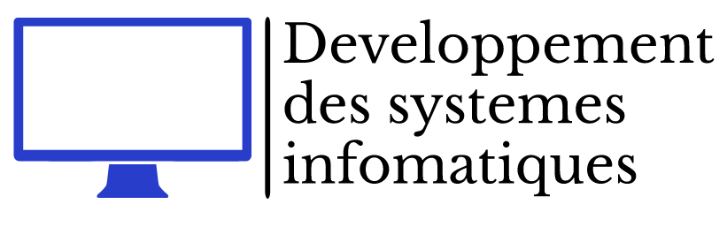
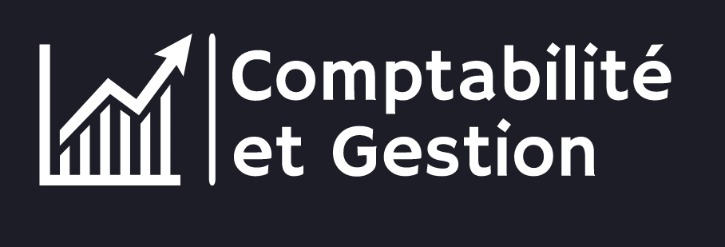

BIENVENUE AU CENTRE DE PREPARATION AU BREVET DE TECHNICIEN SUPERIEUR!
Introduction
Le BTS en un coup d'œil :
Le Brevet de Technicien Supérieur (BTS) que nous proposons est une formation professionnalisante de deux ans, axée sur [Domaine d'études]. Conçu pour offrir un équilibre parfait entre théorie et pratique, notre programme prépare les étudiants à relever les défis du monde professionnel avec confiance et compétence. Nos enseignants qualifiés, notre environnement d'apprentissage stimulant et nos partenariats industriels font de notre BTS une expérience éducative exceptionnelle.
Les perspectives d'avenir :
Une fois que vous aurez obtenu votre BTS avec succès, un monde d'opportunités s'ouvrira à vous. Que vous aspiriez à intégrer directement le monde du travail ou à poursuivre vos études, notre programme vous fournira les compétences et les connaissances nécessaires pour exceller dans votre domaine. Les diplômés de notre BTS sont hautement prisés par les employeurs, et beaucoup choisissent de poursuivre leur parcours académique avec des études supérieures.
Explorez notre site pour en savoir plus sur notre BTS, nos programmes, nos installations et les témoignages de nos étudiants. L'avenir commence ici !
Filieres Disponibles :
un domaine vaste et en constante évolution qui englobe un ensemble diversifié de techniques,
de méthodologies et de technologies visant à créer des systèmes informatiques capables d'effectuer des tâches qui nécessitent généralement l'intelligence humaine.

un processus complexe qui implique la conception, la mise en œuvre,
le déploiement et la maintenance de systèmes logiciels et matériels
destinés à résoudre des problèmes spécifiques ou à répondre à des besoins particuliers.

une branche d'études qui se concentre sur les principes,
les méthodes et les pratiques liés à la comptabilité financière et à la gestion d'entreprise. Cette filière prépare les étudiants à comprendre,
interpréter et appliquer les aspects financiers d'une organisation, tout en développant des compétences en gestion pour prendre des décisions éclairées.
Activités
Journée D'integration
Nous organisons chaque début d'année scolaire une journée d'intégration afin d'accueillir les nouveaux étudiants et de leur faire découvrir l'école. C'est l'occasion parfaite de faire des connaissances et de favoriser une atmosphère accueillante pour tous.
Compétition
Des compétitions ont lieu régulièrement dans l'établissement dans le but de créer de la compétitivité entre les étudiants. Il s'agit de compétitions de culture générale ainsi que de compétitions plus techniques, avec des récompenses pour les meilleures performances
Bureau des étudiants
Chaque année a lieu le choix des représentants du bureau des étudiants. Tout le monde peut postuler, et au début de l'année, les candidats retenus sont dévoilés. Ce seront eux les responsables des activités scolaires
Incription
l'inscription est ouverte du 4 juillet au 30 juillet via massar